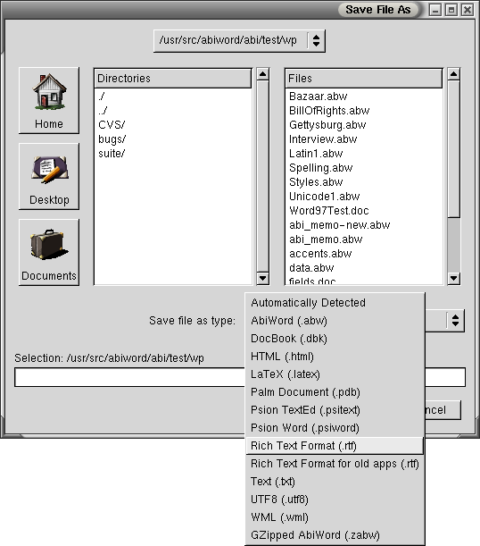

Exchanging Files with Microsoft Word
It is almost inevitable that you will, at some point, need to send a document you have created in AbiWord to someone using Microsoft Word, or open a document created in Microsoft Word in AbiWord. Fortunately, this is quite easy to do.
Viewing AbiWord Documents with Microsoft Word
Until Microsoft announces support for AbiWord files, documents created with AbiWord will first need to be exported into a format that Word can read. This is most easily done by choosing Rich Text Format when saving.

Rich Text Format is often used by Microsoft Office products, and they will have no trouble importing documents saved in this fashion.
Viewing Word Documents with AbiWord
AbiWord can open some documents created in Microsoft format. Open the document using File > Open. After opening the document, there may be some differences in the way AbiWord presents the document when compared with Microsoft Word. In addition, AbiWord cannot yet open all the various formats used by Microsoft Word.
If you do encounter problems, ask the Word user to save the document as Rich Text Format (.rtf). All versions of Microsoft Word can do this, and AbiWord can open RTF files reliably.